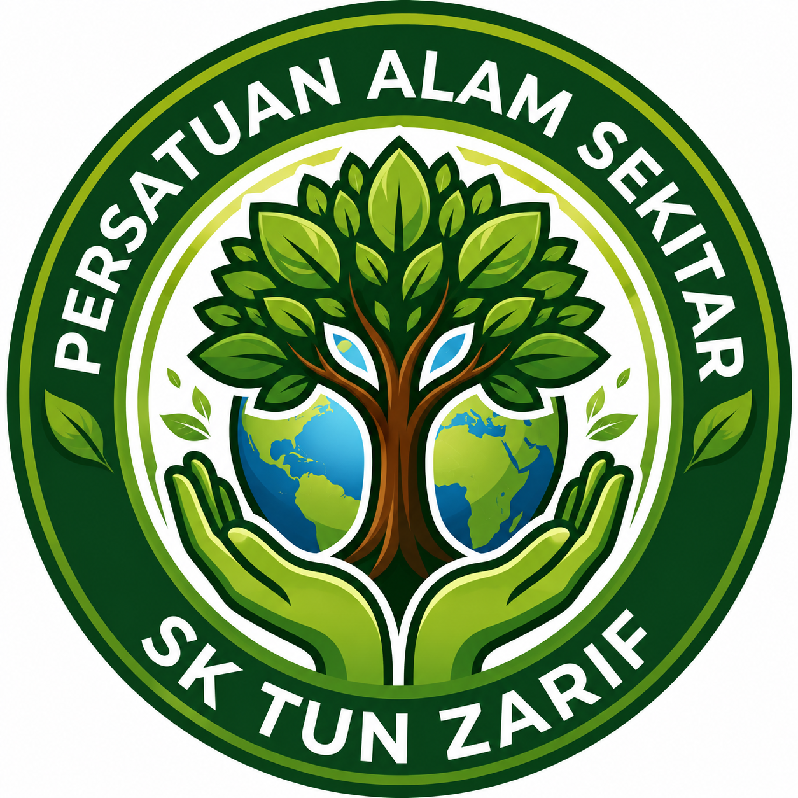
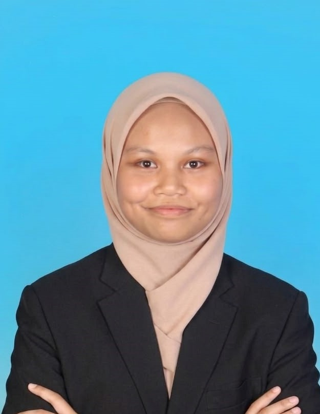
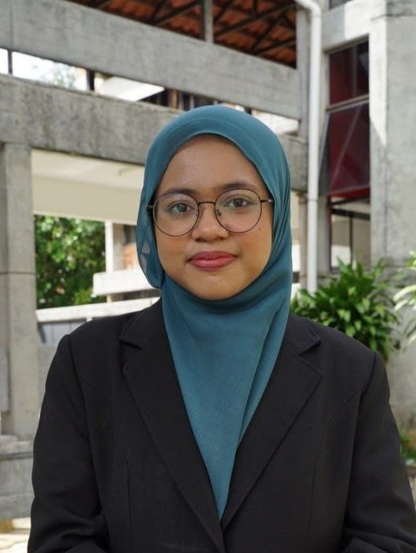
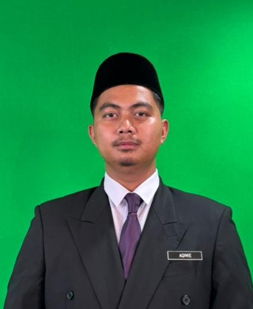

Menyediakan portal lestari...
"Lestari Alam, Jati Diri Tun Zarif"
Portal rasmi Persatuan Alam Sekitar SK Tun Zarif — platform pendidikan alam sekitar yang melahirkan murid celik alam sekitar, bertanggungjawab dan proaktif melalui aktiviti kelestarian serta projek inovasi hijau.

"Lestari Alam, Jati Diri Tun Zarif"
Persatuan ini ditubuhkan sebagai platform pendidikan alam sekitar yang melahirkan murid celik alam sekitar, bertanggungjawab dan proaktif melalui aktiviti kelestarian serta projek inovasi hijau.
Ditubuhkan di SK Tun Zarif sebagai wadah murid untuk memahami, menghayati dan mengamalkan nilai kelestarian dalam kehidupan seharian melalui pendekatan yang interaktif dan menyeronokkan.
Menyediakan pendedahan kepada murid mengenai kepentingan memelihara dan memulihara alam sekitar melalui aktiviti hands-on, projek inovasi dan pembelajaran luar bilik darjah.
Menggalakkan murid menghasilkan projek kitar semula kreatif dan penyelesaian mesra alam yang boleh diaplikasikan di sekolah dan komuniti.
Setiap ahli jawatankuasa memainkan peranan tersendiri dalam menjayakan program persatuan di bawah bimbingan guru penasihat.
Melahirkan generasi murid yang celik alam sekitar, bertanggungjawab dan proaktif menjelang tahun 2030 selaras dengan hasrat kelestarian sekolah.
Asas perjuangan Persatuan Alam Sekitar SK Tun Zarif dalam membina generasi lestari.
Memupuk kesedaran dan kefahaman murid tentang kepentingan memelihara serta memulihara alam sekitar melalui aktiviti interaktif.
Membudayakan amalan 3R (Reduce, Reuse, Recycle) dan penjimatan tenaga dalam kalangan warga sekolah.
Mewujudkan kerjasama dengan komuniti dan organisasi luar bagi memperkasakan usaha kelestarian.
Kesedaran Alam Sekitar
Amalan Sifar Sisa
Projek Kitar Semula Kreatif
Kepimpinan Murid
Tadbir Urus Persatuan
Susunan pentadbiran dan ahli jawatankuasa Persatuan Alam Sekitar SK Tun Zarif.

Membimbing perancangan program dan memastikan setiap aktiviti selaras dengan objektif persatuan.

Menyokong pelaksanaan aktiviti serta menyelia penglibatan murid dalam setiap projek hijau.

Mengetuai mesyuarat, menyelaras aktiviti AJK dan mewakili persatuan dalam program sekolah.
Susunan aktiviti tahunan Persatuan Alam Sekitar SK Tun Zarif.
Melantik ahli jawatankuasa baharu serta merancang hala tuju aktiviti sepanjang tahun.
Aktiviti luar bilik darjah untuk mendekatkan murid dengan alam semula jadi dan ketenangan hutan.
Murid mencatat dan melukis pemerhatian alam sekitar dalam bentuk jurnal kreatif.
Latihan penulisan dan penyampaian isu alam sekitar melalui video dan media sosial.
Mengumpul sisa plastik untuk dijadikan bata eco bagi kegunaan landskap sekolah.
Mengubah bahan terbuang kepada perabot taman yang fungsional dan kreatif.
Memantau penggunaan tenaga elektrik sekolah dan mencadangkan langkah penjimatan.
Menghasilkan baja kompos daripada sisa organik dapur dan taman sekolah.
Setiap murid bertanggungjawab menjaga dan memantau pertumbuhan sepohon pokok angkat.
Kempen mengurangkan penggunaan plastik sekali guna di kalangan warga sekolah.
Lawatan sambil belajar ke kawasan konservasi atau taman eko bagi memperluas pengalaman murid.
Memaparkan hasil projek dan pencapaian persatuan sepanjang tahun kepada warga sekolah.
Klik pada mana-mana kad untuk meneroka maklumat penuh mengenai aktiviti tersebut.
Sumbangan kecil murid Tun Zarif yang membawa impak besar kepada alam sekitar.
Pokok Angkat Ditanam
Kg Bahan Dikitar Semula
Ahli Aktif Persatuan
Program Tahunan
Klik butang di bawah untuk menjana fakta alam sekitar yang rawak dan menarik.
Klik butang "Jana Fakta Baharu" untuk memulakan!
Video pilihan berkaitan pencemaran, perubahan iklim, pemuliharaan dan kitar semula.
Kesan pencemaran plastik terhadap ekosistem darat dan lautan.
Punca dan kesan perubahan iklim global terhadap kehidupan seharian.
Usaha pemuliharaan hutan dan biodiversiti oleh pelbagai pihak.
Panduan dan manfaat amalan kitar semula dalam kehidupan seharian.
Lagu rasmi yang menyemarakkan semangat ahli untuk mencintai dan memelihara alam.
Lagu Rasmi Persatuan Alam Sekitar, SK Tun Zarif
📌 Nota: Cari teg <audio id="audio-lagu-persatuan" src=""> di dalam kod dan masukkan pautan fail audio lagu rasmi.
Jawab 5 soalan berikut dan lihat berapa markah yang anda perolehi!
Soalan 1 / 5
Kuiz Selesai!
0/5
Anggaran pembelanjaan aktiviti tahunan Persatuan Alam Sekitar, disediakan oleh Bendahari untuk semakan guru penasihat.